Training Plan
RPE 7–8 · Rest 60–90 sec
Focus: technique, motor patterns
RPE 8 · Rest 90 sec
Focus: load progression, volume
RPE 8–9 · Rest 90–120 sec
Focus: peak effort, definition

These three minutes are the difference between a strong session and a flat one. Hip circles restore hip mobility; banded clamshells switch on the glute medius; bodyweight squats rehearse the movement pattern you're about to load. Skipping this is the fastest route to a poor session.

The highest-return compound movement in the programme. It activates more total muscle mass simultaneously than almost any other exercise — quads, glutes, hamstrings, and core all working together. For PCOS specifically, this kind of compound loading produces the strongest improvements in insulin sensitivity. Everything else in this session builds on the strength foundation the squat creates.
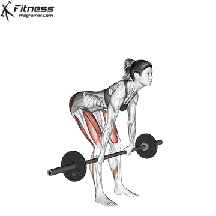
The RDL specifically loads the hamstrings in their lengthened position — the mechanical condition most strongly associated with hypertrophy. The 3-second descent is not optional; this is where the stimulus actually happens. Paired with the squat, it ensures balanced development of the entire posterior chain — which is what creates the glute-hamstring line visible from behind.
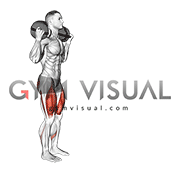
Trains each leg independently — which identifies and corrects side-to-side strength differences before they become injuries. The sandbag's shifting load demands far more core engagement than dumbbells, and the walking pattern develops the functional, athletic stability that carries over to daily movement. An exercise that feels harder than it looks, for good reason.

Allows high-volume quad overload in a stable, controlled position — without adding more spinal fatigue after a heavy squat. This is the second compound quad movement, and it works because the machine supports the spine while the quads continue to accumulate the volume that drives growth. The controlled descent also builds connective tissue resilience that protects the knee long-term.
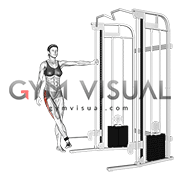
The gluteus medius — the muscle on the side of the hip — is what creates the "shelf" look and the rounded silhouette from the front. Most compound movements like squats primarily hit the glute maximus. The cable abduction is the specific tool to isolate and grow the medius. A high-rep, high-burn exercise that is essential for the aesthetic goals of this programme.
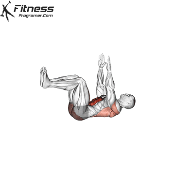
Teaches the core to maintain spinal stability while the limbs are moving — which is exactly how it must function during a heavy squat or deadlift. By forcing the lower back to stay flat against the floor, it builds the deep transverse abdominis strength that creates a tight, functional midsection. A foundational core movement that most people do too fast; slow it down to feel the work.
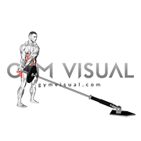
Trains anti-rotation — the ability of the core to resist being pulled out of position. This builds the oblique strength that frames the midsection and provides the rotational stability needed for athletic movement. Because the load is at the end of a long lever (the barbell), the demand on the core is significantly higher than a standard Russian twist or crunch.

Band pull-aparts activate the rear deltoids and scapular retractors — the muscles most likely to be inhibited after hours at a desk. Thoracic rotation restores the spinal mobility needed to press safely overhead. A shoulder that hasn't been mobilised before pressing is the fastest route to an impingement. Seven minutes here prevents months of setback.
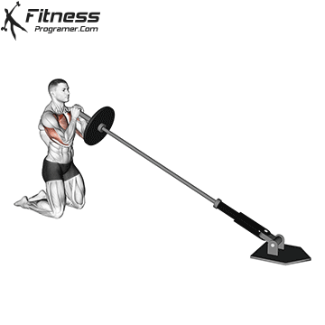
The 45° pressing arc reduces subacromial impingement risk compared to a strict vertical press, meaning you can train shoulder strength more aggressively and more safely over time. It's also unilateral — each arm works independently, which identifies and corrects side-to-side strength imbalances before they compound into postural problems. Shoulder definition is built through load; this is the exercise that delivers it without the injury risk.

A closed-chain pressing movement — meaning the hand is fixed to the ground — which trains the serratus anterior and scapular stabilisers in a way no machine replicates. These are the muscles that keep the shoulder blade properly positioned during all pressing work, and their development directly affects how the shoulders look in a top. Adding a plate or vest keeps this a genuine strength stimulus as ability grows.

The medial deltoid is the muscle that creates shoulder width — and it is notoriously difficult to develop because most exercises underload it. Cable provides constant tension at every point in the arc, unlike dumbbells which lose resistance in the lower half. Four sets is deliberate: this muscle requires high volume to grow, and the results — visible width that broadens the shoulder-to-waist ratio — accumulate over months of this consistent stimulus.
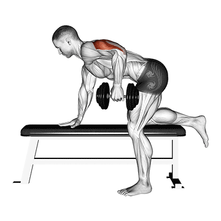
Loads the tricep in its shortened (contracted) position — the direct complement to the overhead extension, which works the long head in its lengthened position. Together, they develop the tricep through its full range of stimulus. The bench-supported position removes any momentum from the movement, which is exactly why isolation exercises like this one actually produce results when done correctly.
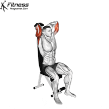
The long head of the tricep — the largest of the three heads, and the one responsible for the visible definition at the back of the upper arm — is maximally stretched only when the arm is overhead. This is the one position the kickback cannot reach. The overhead extension is therefore not redundant; it's the specific stimulus that builds the long head, which is what changes how the arm looks in a sleeveless top.
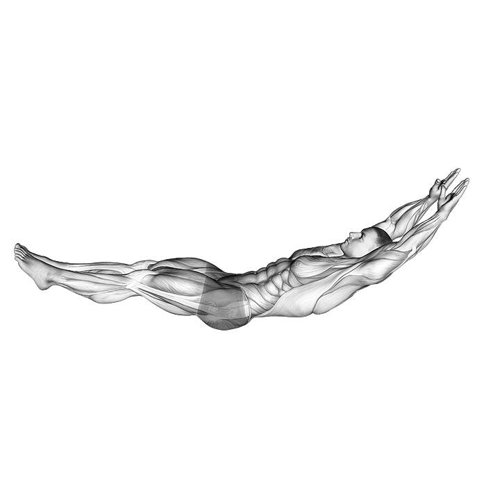
Trains the anterior core under sustained isometric tension — which is how the core actually functions during pressing and pulling movements. Not a crunch, not a plank: a full-body integrated position that demands the entire anterior chain works together. It also forms the foundation of the gymnastic core skill set, so as strength in this position develops, more challenging movements become accessible.
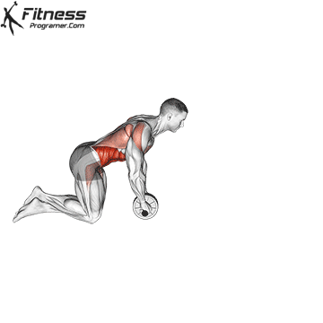
The highest-demand anti-extension core exercise available without specialist equipment. It requires the entire anterior chain to resist full spinal extension under a long lever arm — significantly harder than any plank or crunch variation. The core strength built here translates directly to the stability needed for heavier squats and presses, and to the visible abdominal definition that emerges as body composition improves.
Banded glute bridges are the specific stimulus needed to wake up the glute maximus before heavy loading. Frog pumps provide the lateral activation that compound movements sometimes miss. Skipping this activation means the hamstrings and lower back will likely overcompensate for the glutes during the main lift — which is exactly what we want to avoid for both safety and aesthetic results.
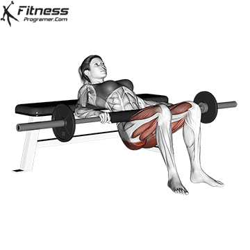
Unlike the squat, which loads the glutes in their lengthened position, the hip thrust loads them at the point of peak contraction (the top). This specific mechanical tension is the primary driver of glute growth. It also involves minimal lower back fatigue compared to deadlifts, meaning you can load it heavily and frequently enough to see real changes in shape. The 1-second squeeze at the top is the most important part of the rep.
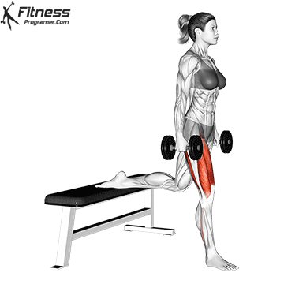
The forward lean during a Bulgarian Split Squat increases the stretch on the glute maximus, making it one of the most effective unilateral exercises for both strength and shape. Because each leg works alone, it identifies and fixes imbalances. It's a high-demand exercise that also improves hip mobility and stability — which protects the knees and lower back during all other lower body work.
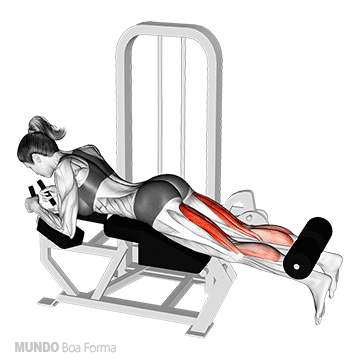
Isolates the hamstrings through knee flexion — the specific function that compound movements like the RDL don't fully address. This develops the "pop" of the hamstring and ensures the knee joint is balanced and protected against the stronger quads. The constant tension of the machine, especially during the slow lowering phase, is what drives the hypertrophy needed for defined legs.
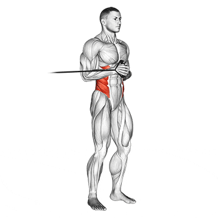
The ultimate anti-rotation exercise. It trains the core to resist lateral forces, which is essential for protecting the spine during heavy lifting and daily movement. Unlike crunches, it builds functional stability and a strong, tight midsection by teaching the muscles to work together to maintain a neutral position under load. It's the "inner armor" that supports everything else you do.
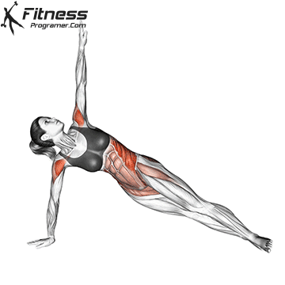
Combines the stability of a side plank with the active contraction of the obliques and glute medius. This double-duty movement strengthens the lateral chain, which is often neglected, and contributes to the overall stability and silhouette of the midsection and hips. It's an efficient way to build the "side core" strength that supports the heavier compound lifts.
Scapular pull-ups teach the brain how to engage the lats and mid-back before the arms take over. Band pull-aparts ensure the rear delts are ready to support the pulling movements. This activation sequence is what prevents the biceps from doing all the work during your rows and pulldowns — ensuring the stimulus actually goes to the back muscles we want to develop.

The latissimus dorsi (lats) are the largest muscles of the upper body and are responsible for the width of the back. Developing the lats creates the V-taper that makes the waist appear smaller by comparison. The wide grip pulldown is the most effective way to target the upper and outer lats, providing the width that defines the upper body silhouette.
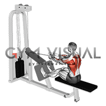
Targets the rhomboids and mid-trapezius — the muscles responsible for back thickness and "pulling the shoulders back." In a world of desk work, these muscles are often weak and overstretched. Strengthening them not only improves the look of the back but also corrects the forward-slumped posture that can make the chest and shoulders appear smaller than they are.
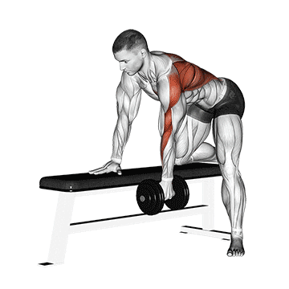
Unilateral work like the single-arm row is essential for identifying and correcting strength and muscle imbalances. Because the arm is free to move in a more natural arc than on a machine, it also improves shoulder health and stability. It allows for a greater range of motion at the top of the rep, leading to better muscle activation and growth.

The rear deltoids and external rotators of the shoulder are critical for both joint health and the "rounded" look of the shoulder from the side and back. Face pulls are the gold standard for targeting these small but important muscles. They counteract the internal rotation caused by heavy chest work and poor posture, ensuring the shoulders stay healthy and look athletic from every angle.
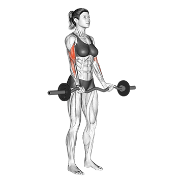
The classic bicep builder. While biceps are worked during all pulling movements, isolation work is needed to maximize their shape and peak. The EZ bar allows for a more natural wrist position, meaning you can load the biceps more heavily without wrist pain. Consistent, controlled curling is what builds the definition that shows when the arms are flexed or in a short-sleeved top.
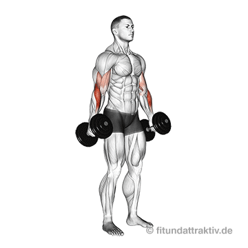
The brachialis is a muscle that lies beneath the bicep. When developed, it literally pushes the bicep up, increasing the height of the arm peak and the thickness of the arm from the side. The neutral (hammer) grip also heavily works the brachioradialis of the forearm, providing a complete, athletic look to the entire arm.

A fundamental core and posterior chain stability exercise. It teaches the body to maintain a neutral spine while the limbs are moving, which is critical for protecting the lower back. It also activates the glutes and spinal erectors in a low-impact way, making it an excellent "finisher" that reinforces the postural habits we're building throughout the programme.